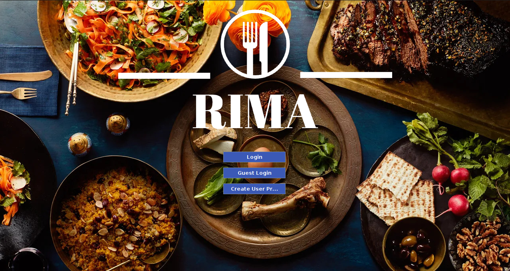
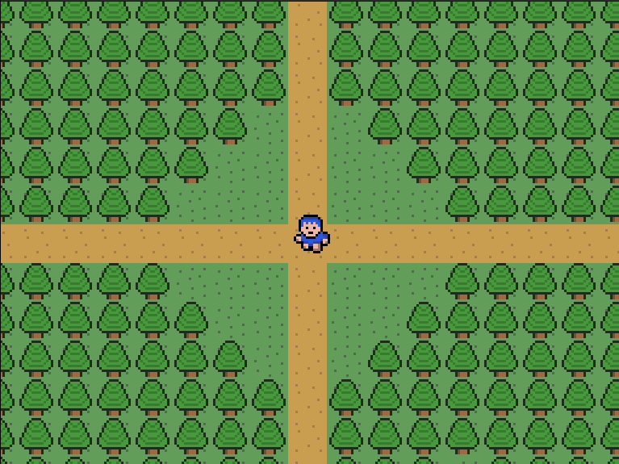
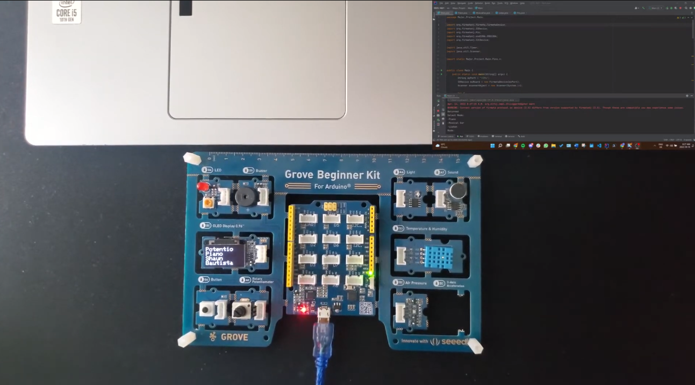

Recipe & Ingredient Management App (RIMA)
Used Java, Swing, MySQL
The Recipe and Ingredient Management App (RIMA) facilitates a quick and convenient way to create or follow recipes. RIMA will come with preloaded recipes and the users can additionally add their recipes to the database. RIMA combines the numerous functionalities of similar apps, while also improving upon these features according to user feedback. Its key functionalities include the ability to search for recipes according to the user’s ingredient of choice, or the user can search for the recipe and it will provide the required ingredients.
Blue Boy Adventures
Audio Playground Radio
